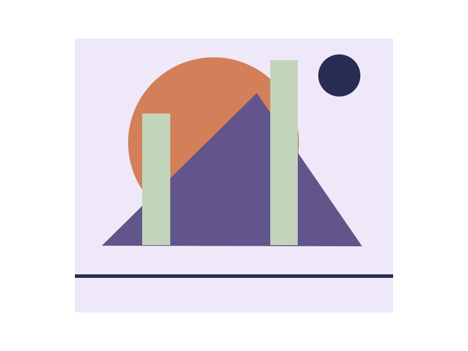

Look a little longer.
An online cabinet of original geometric studies. Explore colour relationships, leave space around a shape and build a small collection of your own.

Overlap, no. 1
Circle, plane and two vertical interruptions. A study made for this collection, using simple vector shapes.
Choose your favouritesNo single right reading.
Begin with what is visible: colour, edge, weight, empty space. Interpretation can come later. Every illustration on this site is an original local vector study.